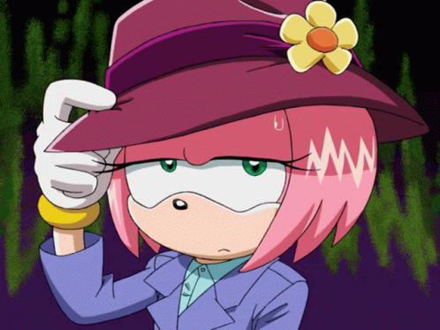

ORIGEM
Amy Rose foi criada pela Sega para expandir o universo de personagens do mundo de Sonic the Hedgehog. A intenção inicial era que ela fosse uma espécie de contraparte feminina de Sonic, mas os desenvolvedores preferiram não seguir a ideia de um casal tradicional. Por isso, foi criada uma dinâmica diferente, onde Amy demonstra grande admiração por Sonic, enquanto ele mantém sua personalidade livre e independente. O design original foi criado por Naoto Ohshima e refinado por Kazuyuki Hoshino. O visual dela foi inspirado no estilo anime dos anos 90, com foco em uma aparência jovem, expressiva e chamativa. Elementos como roupas coloridas e traços mais “fofos” ajudaram a destacar Amy entre os outros personagens da época. Antes de sua estreia nos jogos, Amy apareceu em materiais promocionais e publicações da Shogakukan, o que ajudou a apresentar a personagem ao público japonês. Isso fez com que ela já tivesse certa popularidade antes mesmo de aparecer oficialmente nos videogames. Sua estreia em jogos aconteceu em Sonic CD, onde ela passou a integrar de vez o universo da franquia. A partir daí, Amy começou a aparecer em vários títulos da série, ganhando mais destaque e se tornando uma das personagens mais importantes e reconhecíveis do mundo Sonic ao longo dos anos.

Design original de Amy.
APARENCIA
Amy Rose é uma ouriça rosa com um visual inspirado no estilo anime dos anos 90. Seu design foi criado para ser chamativo, fofo e combinar com o universo colorido da série Sonic the Hedgehog series. Ela possui olhos grandes e expressivos, cabelo em forma de espinhos curtos e uma coloração rosa bem marcante, que é sua principal característica. Em suas primeiras aparições, como em Sonic CD, ela tinha um visual mais simples e infantil, com proporções menores e menos detalhes. Com o passar dos jogos, especialmente em Sonic Adventure, seu design foi atualizado: ganhou um estilo mais moderno, roupas mais detalhadas e traços mais definidos, mantendo ainda sua identidade fofa e energética. Hoje, Amy é reconhecida pelo seu visual icônico: cor rosa vibrante, roupas vermelhas características e um estilo que mistura fofura com atitude, representando bem sua personalidade alegre e determinada.
O estilo clássico da Amy é um vestido vermelho sem mangas com barra branca, botas vermelhas e brancas e uma tiara verde. Esse é o visual mais conhecido desde suas primeiras aparições nos anos 90. Mas existem variações interessantes dependendo do jogo ou mídia:
.jpg)

.jpg)
PERSONALIDADE
Amy Rose é conhecida por ter uma personalidade bem marcante dentro do universo de Sonic the Hedgehog. Ela mistura energia, otimismo e uma determinação muito forte, o que faz dela uma personagem bem mais complexa do que só “fofa”. Ela é geralmente alegre, carinhosa e bastante impulsiva. Amy segue muito o coração dela, principalmente quando se trata do Sonic, já que ela tem uma grande admiração e carinho por ele. Isso faz com que ela seja persistente e, às vezes, até insistente quando quer algo ou quer ajudar alguém.
Ao mesmo tempo, Amy não é fraca nem indefesa. Pelo contrário, ela tem um lado muito corajoso e protetor. Quando necessário, ela enfrenta inimigos sem hesitar, usando o Martelo Piko Piko. Essa mistura de doçura com força é uma das partes mais importantes da personalidade dela. Ela também é muito leal aos amigos e sempre tenta motivar quem está ao redor. Mesmo quando fica irritada ou com ciúmes, ela rapidamente volta ao normal, mostrando que é emocional, mas também muito sincera. No geral, Amy é uma personagem que representa equilíbrio entre fofura, emoção e força — alguém que pode ser doce, mas também muito determinada quando precisa agir.
.gif)
.gif)
